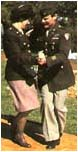

Lindy Hop
African-American Roots
Lindy Hop appears to have its roots in the African-American community of the '20s. In 1927, at a dance marathon at the Manhattan Casino in Harlem, Shorty Snowden and his partner were performing the Texas Tommy, also known then as the Hop. As the story goes, Shorty, bored with the steps, threw his partner into a break-away and began improvising. The crowd loved it. As Shorty and partner left the dance floor, people asked "What was that fantastic step?" Being caught off-guard to name his newly devised steps with a particularly descriptive term, Shorty responded with the name of someone on everyone's mind in that year, and called it the Lindy Hop!
Lindy Hop to Jitterbug
Frankie Manning added aerials and the dance became more and more acrobatic. Very soon, Shorty Snowden's Lindy Hop (deriving from Charles Lindbergh's premier trans-Atlantic flight) took off, pun intended, evolving into Jitterbug